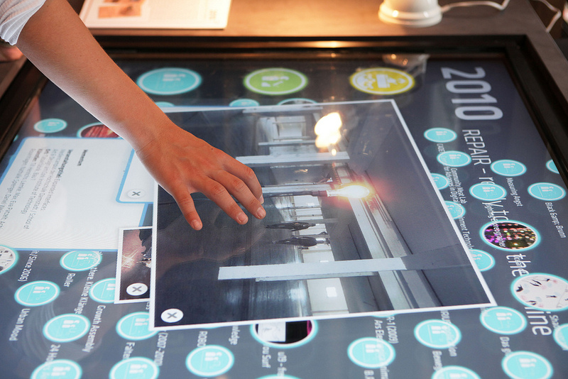
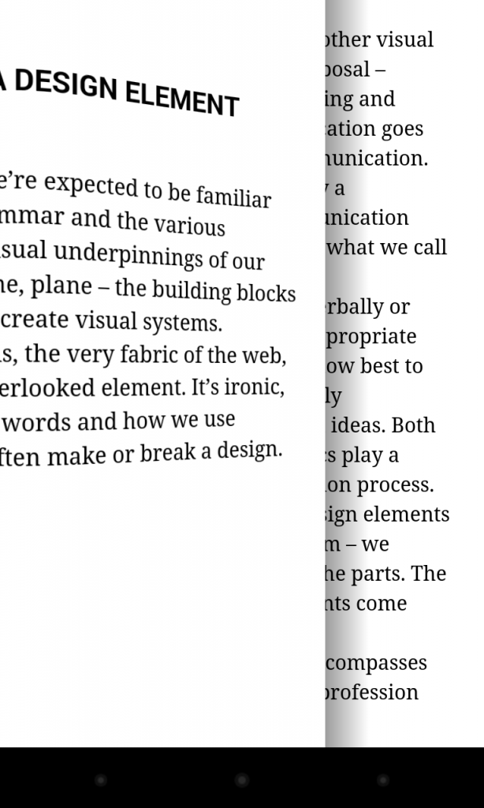

Shot 1 - "Skeumorfismo", no solo otra moda

Nuevas interfaces. Fotografía de ARS Electronica
Cada año se habla de tendencias de diseño nuevas. La evolución y expansión de estas dependen en gran medida de las grandes empresas que las ponen en un pedestal y las explotan hasta aburrir a sus usuarios.
Parece que lo importante no es hacer una aplicación con personalidad, es mejor diseñar una aplicación "flat" o "skeumórfica" (aquí tenéis un gran artículo sobre qué es el "skeumorfismo"), así si es la tendencia del momento aseguramos su éxito. Vendemos nuestras ideas a una tendencia, por lo que dentro de uno o dos años o cambiamos el diseño o nos quedamos atrás.
La evolución de un diseño debe de ir orientado a la experiencia que genera en los usuarios y a la propia personalidad de la empresa. Podemos cambiar varias veces de arquitectura para mejorar la relación de contenidos, podemos cambiar los elementos de una interfaz para mejorar su posición, podemos dar un giro para reforzar la personalidad de la aplicación, ¿pero cambiar todo un diseño porque una nueva tendencia ha aparecido? Parece excesivo, y lo es.
La clave está en que al desarrollar una aplicación no intentes remarcar la personalidad de la tendencia de diseño que quieres seguir, remarca la personalidad de tu propia aplicación. Las tendencias de diseño son un conjunto de consejos y herramientas, en ningún momento hablamos de reglas, porque las reglas vienen impuestas por las propias aplicaciones y sus usuarios, contextos, empresas...

Transición de página "skeumórfica" de Google Books
Si crees que la sencillez y la simpleza de flat es perfecta para tu aplicación, aplícala, pero por ello no dejes de utilizar degradados o texturas. Al igual que "skeumorfismo" va más allá de una textura, pues una interacción realista como pasar la página en google Books también se engloba en esta tendencia, el diseñar va más allá de una regla, pues la interfaz debe de hacer honor al contenido que ofrece, no a la moda que sigue.